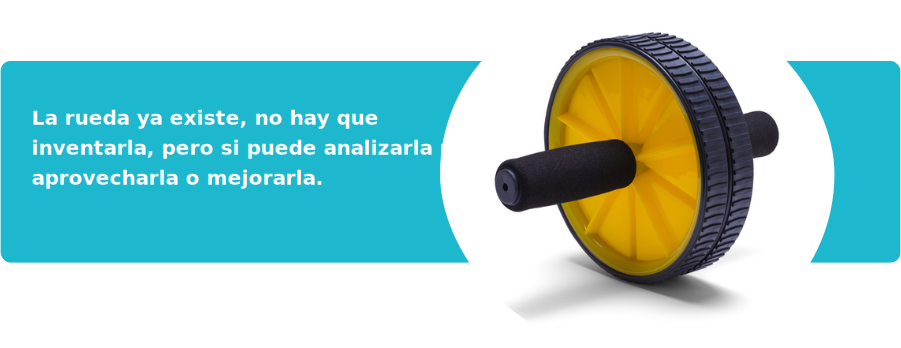
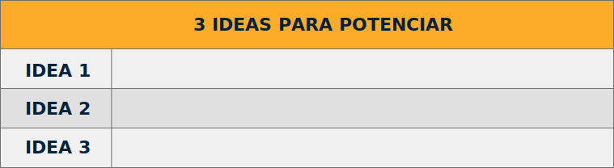
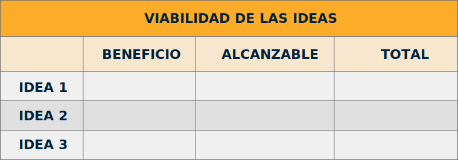
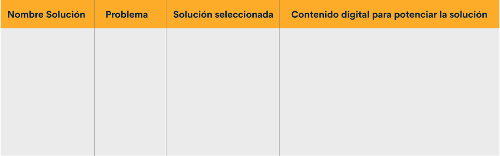
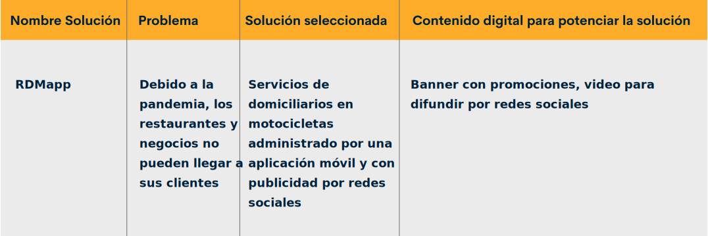
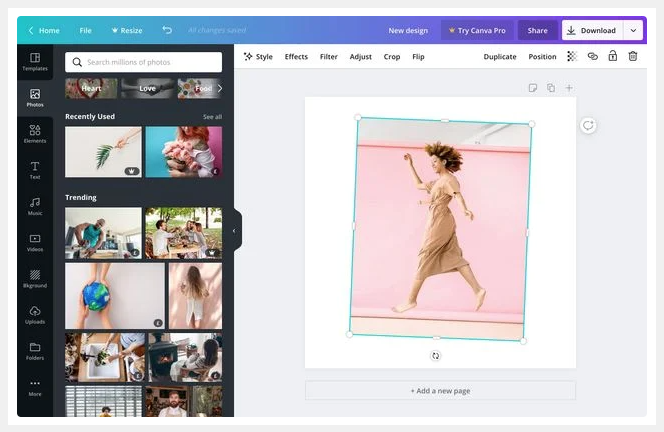
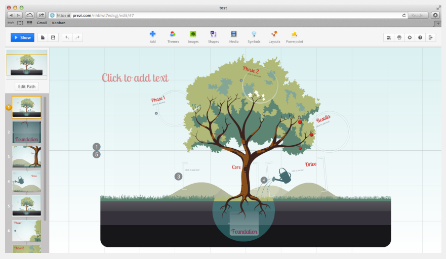

1. Impacto de las TIC
Las Tecnologías de Información y Comunicación están presentes en aspectos cotidianos de la vida. ¿Cuántos tienen un dispositivo móvil en las manos en este momento?
Ahora piense que desea comunicarse con alguien al otro lado del mundo, ¿qué necesita?: un dispositivo, una aplicación de comunicación y un paquete de datos o Wifi. Pero, devuélvase unos 30 años y piense en lo que tenían que hacer las personas para hablar con un primo en España, por ejemplo. Seguramente debían preparar muy bien lo que iban a decir porque la llamada tenía un costo elevado otra posibilidad era enviar una carta que podía demorar más de una semana en llegar. Hoy basta con enviar un emoticón por una app de mensajería y llega en instantes.
¿Qué impactos puede tener esto en la vida de las personas?
¿podrá agilizar tiempos?
¿podrá hacer crecer un negocio?
1.1 Impacto académico
Lo mismo pasa con la educación, por eso lo reto a tomar nota de lo que va a ver y pensar si el algún momento tuvo que usar lo que verá a continuación:
Imagine que se encuentra en los 30 años atrás ya mencionados y desea buscar información sobre el Dragón de Komodo.
Seguramente utilizaría una enciclopedia de varios tomos y ubicaría en la letra D, Dragón de Komodo. ¿Pero cuánto tiempo se tomaría?
Hoy puede encontrar en segundos imágenes de este animal con su buscador favorito o incluso hablándole a su teléfono.

Es así como las herramientas TIC llegaron para quedarse e impactar vidas.
1.2 Impacto emprendimiento
Domit Express: una aplicación que promociona el comercio local y vincula al 'mototaxismo' | Mathew y Manuel, sabanalargueros, crearon Domit Express, la app en la que los negocios locales presentan productos para los consumidores y que a la vez son transportados por "mototaxistas" organizados a través de una cooperativa de transporte.
Yul, el cocinero llanero que con tecnología ha dado a conocer sus recetas | Yulián Tellez es un chef nacido en el municipio de Guamal que ha logrado compartir muchos de sus platos vía internet y, gracias a esa herramienta, su negocio ha empezado a ver los resultados.
2. Proceso de ideación
2.1 Pensamiento creativo
La intención principal de la ideación es proponer posibles soluciones a un problema y para ello existen diversos métodos.
La mayor parte de estos métodos aplican el pensamiento divergente para explorar todas las posibles soluciones que ocurran y luego se aplica un pensamiento lógico para poder aterrizar esas ideas y analizar su viabilidad.
Cuando ha analizado su idea, puede hacer una consulta en la web, bases de datos y otras, para saber si alguien más ha trabajado en esa idea y así pueda analizar lo que ya existe para aplicarlo o innovarlo, además que las experiencias que ya existen ayudan a tener un camino más eficiente.
2.2 Potenciar emprendimiento
Cuando se tiene información de quién ha solucionado problemas similares, se pueden aterrizar las ideas y seleccionar las que mejor solución aportan al problema.
Una ayuda para lograr esto, es en el formato Selección de ideas que se encuentra como documento complementario, escribir las 3 mejores ideas, las cuales pueden ser una combinación de varias o las que consideren más efectivas.
Ahora, para seleccionar o construir la idea definitiva es importante realizar una validación, la cual permite identificar la viabilidad de la idea y para esto es importante definir unos parámetros.
Para este caso y partiendo del formato Selección de ideas, se definieron 2 parámetros que son:
Beneficio: qué tan provechosa es la idea.
Alcanzable: qué tan factible es la idea.
Lo anterior, se realiza utilizando el formato Viabilidad de ideas que también se encuentra como documento complementario.
Para diligenciarlo se debe tener en cuenta lo siguiente:
El máximo puntaje que se puede obtener es 3 y el mínimo es 1.
En una misma columna no se puede repetir el mismo número, esto para efectos de validación.
BENEFICIO
Imagine que ha seleccionado 3 ideas y que al analizarlas considera que la idea que más aporta Beneficio es la 2, luego la 1 y finalmente la 3; en este caso la idea 2 se valoraría con un 3 en la columna beneficio, la idea 1 se haría con 2 y la idea 3 con 1.
Idea 1: 2
Idea 2: 3
Idea 3: 1
ALCANZABLE
Ahora, se prosigue con el parámetro Alcanzable. Aquí se va a suponer que la idea más alcanzable es la 3, luego 2 y finamente la 1.
Idea 1: 1
Idea 2: 2
Idea 3: 3
TOTALES
Luego, lo que debe hacer es sumar de manera horizontal el puntaje que obtienen las ideas. En el ejemplo que se viene trabajando la columna de puntajes totales (Total) quedaría:
Idea 1: 3
Idea 2: 5
Idea 3: 4
Con lo anterior, se determinó que la idea más viable es la número 2, la cual obtuvo el puntaje mayor.
Para establecer la idea final se pueden combinar las ideas o dejar una de las 3 que anteriormente se validaron.
El siguiente momento es estructurar la idea dentro del formato Ideación final, hallado también como documento complementario. Para ello, se escribe el nombre de la solución planteada, que puede ser un nombre atractivo y de fácil recordación. En la segunda columna que se llama Problema se escribe el problema seleccionado, luego la solución o idea que se definió en esta sección y finalmente, el contenido digital que va a utilizar para potenciar esta idea.
Para aplicar lo ya explicado, se hará con un ejemplo muy típico en el 2020 en Colombia que puede presentarse. Piense que el problema que seleccionó tiene que ver con un municipio donde la pandemia afectó los restaurantes y no pueden abrir sus instalaciones, por lo cual la demanda de domicilios es alta, al igual que ciertas compras que las personas no pueden hacer por las restricciones de salida.
Después del proceso de generar ideas y validarlas, escogió la idea de un servicio de red de domiciliarios llamado RDMapp, la cual usará una app para ser contactado y poder enviar domiciliarios a realizar todas estas actividades.
Ahora después de analizar la situación considera que el contenido digital que más puede ayudarlo a potenciar su idea es un banner, pero además un video; de esta forma puede diligenciar el formato de ideación final en cada una de sus casillas.
3. Contenido digital
3.1 Concepto y características
Los usuarios de la red de internet se exponen día a día a múltiples ejemplos de contenido digital, en algunos casos desconociendo su existencia. Este contenido es todo lo que se sube o publica, desde fotografías, texto, videos, transmisión en vivo, seminarios web o webinar.
Y es así como con la web 2.0 nace la posibilidad de compartir información, gracias a las redes sociales, donde las marcas encuentran un nicho de usuarios, los cuales enganchan con estrategias de comercialización llevadas a cabo en los medios digitales y la interacción casi inmediata entre marca y usuario le da la importancia que no tenía al usuario, al permitirse libremente comentar e interactuar al mismo nivel. Por otro lado, las marcas llegan a más usuarios aplicando estrategias cada vez más novedosas y eficaces basados en las sugerencias y aceptación de los usuarios.
3.2 Tipos de contenido digital
Primero que todo, se debe saber que se tiene un contenido digital genérico, por ejemplo: algunos influenciadores o personajes famosos publican contenido en sus redes sociales con poca coherencia o sin un mensaje significativo para sus seguidores, solo buscando aumentar su visibilidad en las redes.
Lo anterior demuestra que, aunque el contenido digital no aporte nada de valor ni tenga utilidad práctica, a sus seguidores les agrada y los entretiene este tipo de contenidos.
Por otro lado, está el contenido digital publicitario, el cual es todo lo que se publica brindando información que genera ventas de un producto o servicio. Es de resaltar que para este contenido, las nuevas tecnologías obligaron a las marcas a romper paradigmas, pues antes del internet se estaba casi que obligado a ver en la TV más de 30 minutos de publicidad para poder ver la novela de moda “Café con aroma de mujer”.
Y es que actualmente, en el mundo digital se puede pagar y adquirir un plan donde se elimina la publicidad; plataformas como YouTube Premium ofrecen ello: YouTube Music sin anuncios, sin conexión y en segundo plano. Así como esta plataforma existen muchos ejemplos todos con el mismo mecanismo.
También, se encuentra el contenido digital excepcional, el cual es atractivo para las personas, es diseñado para tratar de enganchar usuarios y generar ventas, pero al mismo tiempo para ofrecer contenido que entretenga o en algunos casos instruya. Un influencer que goza de credibilidad y entrega estos contenidos a sus usuarios, gana más seguidores y por supuesto más contratos con las marcas.
Por tal motivo, cada vez es más necesario que las marcas creen este tipo de estrategias y como ejemplo de ello, se puede ver a la marca registrada Cerveza Poker en su canal de YouTube llamado #ManoAManoPoker, donde en esencia lo que hace es entretener, mantener la atención del usuario y publicitar.
¿Quiere saber cómo planear la construcción de un contenido digital?
Para ello, defina qué tipo de contenido desea crear y determine si va a utilizar una imagen, un video, un audio o una presentación. Este formato depende de los recursos disponibles con los que se cuente, el interés del público objetivo y la capacidad de adaptación para la solución seleccionada.
4. Planeación y herramientas de contenido digital
4.1 Planeación y herramientas para imagen
Las herramientas de creación de imágenes brindan una gama alta de posibilidades de edición en cuanto a filtros, fuentes de texto, formas, entre otras. Existen múltiples herramientas en el mercado, algunas gratuitas y otras pagas y con respecto al sistema operativo se pueden encontrar algunas de manera online, como por ejemplo:
Ejemplo Interfaz gráfica de www.canva.com
En alguna de las herramientas mencionadas o la de su preferencia, se puede editar una imagen en el celular o tablet; pero antes de hacerlo, es importante tener en cuenta lo siguiente para poder crear una imagen con contenido útil o si es el caso atraer clientes:
Defina lo que quiere comunicar.
Examine la herramienta y sus posibilidades antes de empezar.
Elija las fotografías que va a utilizar.
Si prefiere descargar imágenes de internet utilice plataformas que permitan usar contenido gratuito o el que pueda atribuir al creador para su libre uso. Algunos de estos repositorios son:
Diseño de la imagen. Este punto se especificará más adelante.
Construya la imagen.
4.2 Planeación y herramientas para presentaciones
Crear una presentación efectiva requiere de ser cuidadoso al momento de elegir los elementos visuales, el tipo de fuente y el punto focal. Si tiene en cuenta estos 3 elementos en lo que quiere comunicar, estará más cerca de lograr lo que desea.
El siguiente listado contiene algunas de las plataformas que permiten crear presentaciones interactivas online de manera gratuita o a través de un registro:

Ejemplo Interfaz gráfica de www.prezi.com
Al igual que con la planeación de una imagen, es importante considerar estos puntos:
Defina lo que quiere comunicar.
Examine la herramienta y sus posibilidades antes de empezar.
Defina los datos relevantes que va a mostrar en cada página o diapositiva.
Cree una secuencia de la información para que tenga un hilo conductor.
Realice el diseño de la presentación. Este punto se especifica más adelante.
Escoja imágenes y fuentes en armonía con los colores.
Construya la presentación, revísela y ensáyela.
4.3 Planeación y herramientas para audio
Una herramienta que cumple con los requerimientos a la hora de editar audios es Audacity (https://www.audacityteam.org/), la cual es una multiplataforma de uso gratuito. Para iniciar es una herramienta excelente como punto de partida si se necesita hacer un aviso publicitario; por ejemplo, el propietario de un local comercial que promociona sus productos o promociones por medio de audio, logrando que ese contenido genere expectativa en los usuarios. Pero este proceso no termina ahí, ya que puede subirlo a internet en las redes sociales y plataformas para podcast.
Lastimosamente la radio pasó a un segundo plano a través del tiempo, debido la evolución de los medios de comunicación como ha sucedido con casi todo en el mundo, donde se evoluciona o se muere. Por ello, la importancia de crear para este medio podcast, ya que en el entorno digital existe gran variedad en sus contenidos, donde hay para todos los gustos, creando temas de video juegos, cine, farándula, etc.
En los últimos años tiene más y más fuerza este medio, gracias a la buena aceptación de los usuarios de internet. Por tal motivo, si crea un podcast tenga en cuenta lo siguiente:
Elija un tema para el podcast.
Defina la población objetivo.
Planifique el contenido que se abordará.
Diseñe la propuesta de audio. Este aspecto se especificará más adelante.
Prepárese vocalmente.
Ordene el equipo para grabar.
Edite el audio.
Publique y divulgue el audio.
Las siguientes son algunas plataformas para alojar podcast:
Ejemplo Interfaz gráfica de www.transistor.fm
4.4 Planeación y herramientas para video
Múltiples soluciones para edición de video se encuentran en la red y estas permiten combinar textos, imágenes y audios en un solo contenido. Pero, para lograr un buen video es necesario tener una planeación adecuada donde:
El guion es el punto de partida en la creación de un video, es donde se engancha al público y se expone lo que se logrará al finalizar de verlo. Se debe tener en cuenta:
Cautivar al público desde el inicio del video.
Tener claro el tema que se desarrollará.
Planear el contenido; es decir, cómo lo va a entregar a los usuarios. Un ejemplo sería hacerlo paso a paso y dividir el tema en pequeños pasos que se entregarán en orden para lograr mayor efectividad al comunicar el mensaje.
Saber qué imágenes, efectos, audios y demás recursos apoyarán la producción del video.
El escenario lo puede definir de acuerdo con lo que quiera proyectar al público objetivo. Hay varias opciones para tener como escenarios; sin embargo, puede acondicionar una habitación, para que el entorno tenga los conceptos que quiere transmitir. Lo importante es cuidar a los detalles de la luz, el fondo del video y el audio. Con respecto al fondo, puede hacer uso de cromas, una técnica visual que extrae el color de la imagen y se remplaza por otra.
Inicie la grabación haciendo uso de la cámara que ha seleccionado. Puede ser un celular o una cámara profesional. Lo importante en este paso es tener en cuenta el guion que se creó, de manera que todos los movimientos y palabras usadas tengan un sentido.
Se ha llegado a un punto importante dentro del proceso de creación, “la edición”. Aquí se unen muchos recursos diferentes a los captados en la grabación del video, por ejemplo: imágenes, audios, animaciones, títulos, textos y más.
5. Diseño del contenido digital
5.1 Diseño y concepto básico
El término diseño es muy usado a nivel general, por ejemplo, cuando alguien quiere construir una casa, uno de los pasos iniciales es el diseño o cuando se habla de una propuesta en un proyecto o empresa, se planea y diseña antes de ejecutarla.
Diseñar es fundamental para lograr objetivos y tener una idea más clara de lo que se quiere. En el mundo del contenido digital es fundamental hacerlo para poder ejecutar acciones conforme a ese diseño y los requerimientos.
5.2 Diseño de imagen
Para diseñar un contenido de una imagen como un banner o un flyer, es importante tener en cuenta:
1. Definir lo que se quiere
Definir si la imagen se va a publicar en Facebook como portada de una página, en un tweet o como miniatura de un video en YouTube, Instagram o en algún dispositivo móvil. Esto es importante tenerlo en cuenta porque las imágenes de portada son rectangulares, mientras que las miniaturas de videos o las imágenes en Instagram son cuadradas.
2. Generar ideas
Se escriben las ideas que se tienen sobre el contenido de imagen, lo que se considera debe aparecer, si es necesaria alguna foto o si se necesitan recursos ya creados para ser buscados por internet y anexarlos a la imagen. Todo esto pensando siempre en la idea que se quiere potenciar.
3. Crear bocetos
Crear dibujos preliminares hechos rápidamente y sin tanta complejidad. Se recomienda tener en cuenta colores, textos y demás elementos que harán parte de la imagen a crear. Puede trabajarse en papel o utilizar programas como CANVA, el cual se vio en el apartado de planeación.
4. Validación
En equipo se validan las opciones que se llevan hasta el momento y en el caso que aplique, también con el cliente o potenciales usuarios, para luego hacer los ajustes pertinentes.
5. Boceto final
Aquí va la representación más cercana a al producto que se va a construir para empezar el proceso.
5.3 Diseño de audio
Los contenidos de audio han sido empleados en diversos canales como radio, redes sociales e incluso en las calles por medio del conocido “perifoneo”, donde se pueden encontrar contenidos como podcast o incluso comerciales. En algunos casos se acompañan de imágenes fijas o simplemente se emite el audio.
Para diseñar un contenido de audio se deben tener en cuenta los aspectos que se desarrollaron anteriormente en la planeación del contenido.
Teniendo todo esto en mente, se debe determinar el tiempo de duración dependiendo del público objetivo y elementos previamente abordados.
Lo siguiente, es elaborar el guion escrito, tomándose el tiempo de revisarlo y leerlo con la entonación que se requiere para determinar si son necesarios algunos cambios. Para ello, es recomendable hacer una grabación de prueba y ajustarla de ser necesario, también anotar sobre el guion con símbolos donde se debe acelerar la voz, subir o bajar el volumen o hacer más notoriedad en las palabras sobre las que se va a tener énfasis.
Después de hacer el análisis del guion es importante analizar la pista de audio que se quiere usar de fondo, si lo considera pertinente o las pistas dependiendo de la duración y de la intencionalidad del texto y manejo de emociones.
5.4 Diseño de presentación
Una presentación es una herramienta importante cuando se va a socializar.
Uno de los aspectos más importantes es que tenga gráficos, pues ellos representan metáforas y son fundamentales para el cerebro humano.
El texto debe ser limitado de manera esencial y contrastar con el color del fondo. La letra negra en un fondo oscuro no se va a ver, así como un tono pastel con letra blanca.
Teniendo en cuenta todo lo anterior, en el diseño de las diapositivas para las presentaciones, se puede tomar en cuenta lo siguiente:
Tener en mente el tiempo que se tiene para la presentación y decidir cuántas diapositivas se van a utilizar.
Realizar un esquema de tiempo y temas, especificando cuánto tiempo se toma para cada diapositiva.
Como ya se definió previamente en la secuencia y las imágenes a usar, es importante ir organizando la forma como se quiere que se vean las imágenes y el lugar donde irán los textos y modificaciones a los ángulos de las imágenes y demás.
Realizar un guion base con palabras claves y visualizar cada diapositiva para articular el discurso con el recurso.
Pasar a la fase de construcción final, ensayo y ajustes.
Es importante aclarar que se pueden buscar plantillas gratuitas identificando en cuáles se debe dar reconocimiento al diseñador de la plantilla y usarlas de manera efectiva en los ajustes.
5.5 Diseño de video
El video es un contenido muy completo que permite grandes posibilidades, por eso es vital tener en cuenta los aspectos vistos anteriormente en la planeación del contenido.
El video contiene imágenes en movimiento o estáticas, pero normalmente va acompañado de un audio. Por tal motivo, uno de los componentes importantes a construir es un guion, sin embargo, este lleva los componentes del contenido de audio, pero adicional al que ya se trabajó anteriormente, vienen los componentes de imagen dentro del guion como si fuera una historieta, a lo que se le conoce como storyboard.
Es importante tener en cuenta cómo va a ser la comunicación corporal o no verbal dentro de la grabación del video y al ser este un factor de planear se puede incluir en el storyboard.
El rostro, el movimiento del cuerpo en conjunto con los componentes de la voz, se articulan para que el video transmita emociones; de allí la importancia de poder incluir todo esto en el storyboard, el cual se le conoce como el entregable del diseño del video.
Glosario
Boceto:ilustración esquemática básica para simbolizar ideas. (Pérez y Merino, 2012).
Cuenta premium:tipo de convenio o forma de usar un servicio con características superiores a las de un usuario gratuito. Muchos aplicativos tienen una versión gratuita y otra de pago o premium que ofrece ventajas representativas.
Ideación:proceso creativo en el que generalmente participa un equipo de trabajo, con el objetivo de generar diversas ideas para abordar un problema o una necesidad.
Influencer:persona que tiene capacidad de influir sobre la decisión de compra o de ejecutar acciones en una comunidad, a tal punto de tener credibilidad o sencillamente despertar afinidad en comunidades. Esta figura se usa en el mercadeo para difundir marcas, productos o servicios.
Pensamiento divergente:el pensamiento divergente o lateral se caracteriza por la capacidad de generar múltiples e ingeniosas soluciones a un mismo problema. Es un enfoque mental espontáneo, fluido y no lineal, basado en la curiosidad y también en el inconformismo. De hecho, es también un tipo de pensamiento muy común en los niños, ahí donde la alegría, la imaginación y la frescura ofrecen más libertad a sus razonamientos. (Sabater, 2018).
Pensamiento lógico:el pensamiento lógico es aquel que se desprende de las relaciones entre los objetos y procede de la propia elaboración del individuo. Surge a través de la coordinación de las relaciones que previamente ha creado entre los objetos. (Pérez y Merino, 2008).
Podcast:los podcasts son episodios de un programa disponibles en internet. Normalmente son grabaciones de audio o vídeo originales, pero también pueden ser grabaciones de un programa de radio o televisión ya emitido, de una clase, una actuación o cualquier otro evento. (Apple, 2020).
Repositorios:son espacios donde se almacena información de diversas características. Se pueden encontrar repositorios de documentos científicos, archivos de música, imágenes, videos, etc.
Streaming:el concepto de streaming se refiere a cualquier contenido de medios, ya sea en vivo o grabado, que se puede disfrutar en computadoras y aparatos móviles a través de internet y en tiempo real. Los podcasts, webcasts, las películas, los programas de TV y los videos musicales son tipos comunes de contenido de streaming. (Verizon, 2020).
Validación:proceso para dar fuerza o validez a una idea, por medio de parámetros establecidos que permiten la evaluación de estas ideas.
Webinar:un webinar es una conferencia, taller, curso o seminario en formato vídeo que se imparte a través de internet. Lo que caracteriza al webinar y le aporta un valor es la interacción que se produce entre el speaker y los usuarios asistentes al mismo. (40deFiebre, 2020).
Material complementario
| Nombre del documento o material. | Tipo de material. | Enlace del Recurso. |
|---|---|---|
| Álvarez, M. (s.f.), Análisis comparativo del impacto de las TIC en el crecimiento económico de España y Estados Unidos tras la crisis económica. | Tesis | ver |
| MinTIC. (2017), ¿Qué es un contenido Digital? | Página web | ver |
| Ormaza, M. I. y Rodríguez, M. (2020). El impacto de las TIC en el sistema educativo. | Artículo | ver |
Referencias bibliográficas
40deFiebre. (2020). Diccionario de Marketing Digital. ¿Qué es un webinar? https://www.40defiebre.com/que-es/webinar
Álvarez, M. (s.f.), Análisis comparativo del impacto de las TIC en el crecimiento económico de España y Estados Unidos tras la crisis económica. https://repositorio.upct.es/bitstream/handle/10317/8678/tfg-alv-ana.pdf?sequence=1&isAllowed=y
Almeida, M. (2017). Lectura, escritura y oralidad en español. https://leo.uniandes.edu.co/index.php/oralidad-sec-menu/87-guia-para-elaborar-una-presentacion-efectiva-en-power-point
Apple. (2020). Aficionados a los podcast: preguntas frecuentes.https://www.apple.com/es/itunes/podcasts/fanfaq.html
Athuraliya, A. (2018). Viral Video Tip: To Make Better Videos, Start with a Storyboard. https://creately.com/blog/diagrams/how-to-make-a-storyboard-for-video/
Buzzsprout. (2020). How to Start a Podcast. https://www.buzzsprout.com/how-to-make-a-podcast
Childress, A. (2019). ¿Cuáles Son las Mejores Fuentes para Utilizar en Presentaciones de PowerPoint? (Guía Completa 2019). https://business.tutsplus.com/es/tutorials/best-fonts-for-powerpoint-ppt-presentations--cms-33372
Hotmart. (2019). Hotmart/Blog. https://blog.hotmart.com/es/formatos-de-video/
Inbuze Digital Marketing. (2019). Contenidos digitales: qué son, tipos y cómo utilizarlos en tu estrategia de marketing. https://www.inbuze.com/contenidos-digitales/#:~:text=Los%20contenidos%20digitales%20son%20cualquier,%2C%20im%C3%A1genes%2C%20v%C3%ADdeos%2C%20mapas%E2%80%A6
Klaric, J. (2019). Neuro oratoria. Editorial Planeta Chilena.
MinTIC. (2017), ¿Qué es un contenido Digital? https://www.mintic.gov.co/portal/inicio/57688:Contenidos-Digitales
Ormaza, M. I. y Rodríguez, M. (2020). El impacto de las TIC en el sistema educativo. https://www.eumed.net/rev/atlante/2020/05/tic-sistema-educativo.html
Paredro. (2015). Las fases del diseño gráfico en 7 pasos. https://www.paredro.com/106160-2/
Pérez, J. y Merino, M. (2008). Pensamiento lógico. Definición.de. https://definicion.de/pensamiento-logico/
Pérez, J. y Merino, M. (2012). Boceto. Definición.de. https://definicion.de/boceto/
Sabater, V. (2018). Pensamiento divergente: qué es y cómo desarrollarlo.https://lamenteesmaravillosa.com/pensamiento-divergente-desarrollarlo/
Silverman, D. (2016). Diseño de Presentaciones. https://disenodepresentaciones.wordpress.com/2016/08/11/punto-focal-3-maneras-de-establecerlo/#:~:text=El%20punto%20focal%20de%20una,Idealmente%20deber%C3%ADamos%20definir%20s%C3%B3lo%20uno
Verizon. (2020). Transmisión. https://espanol.verizon.com/info/definitions/streaming/
Fotografías y vectores tomados de https://www.shutterstock.com/ y https://www.freepik.es/
Licencia Creative Commons
CC BY-NC-SA
Ver licencia.